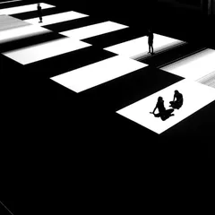
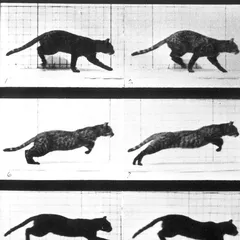
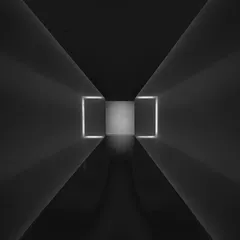
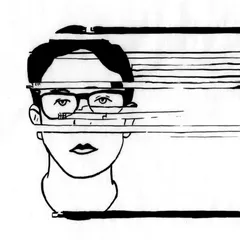
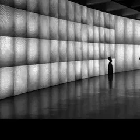

●
Introduction to Immersive Media
BCM116 Materials





Ryoji Ikeda · Eadweard Muybridge · James Turrell
01
Assessment Rubrics
Grade-band descriptors (HD–F) for all four assessments, linked back to the approved Subject Outline criteria.
→
02
Assessment Prompts
Full project prompt lists for Investigations 1, 2, 3 & 4, with space for additional resources under each.
→
03
Workshops
Week-by-week workshop notes and briefs.
→
04
Learning Resources
General-purpose technique guides — frame-based animation, masking, green screen, title cards — useful across workshops and assignments.
→
BCM116 · Immersive Media